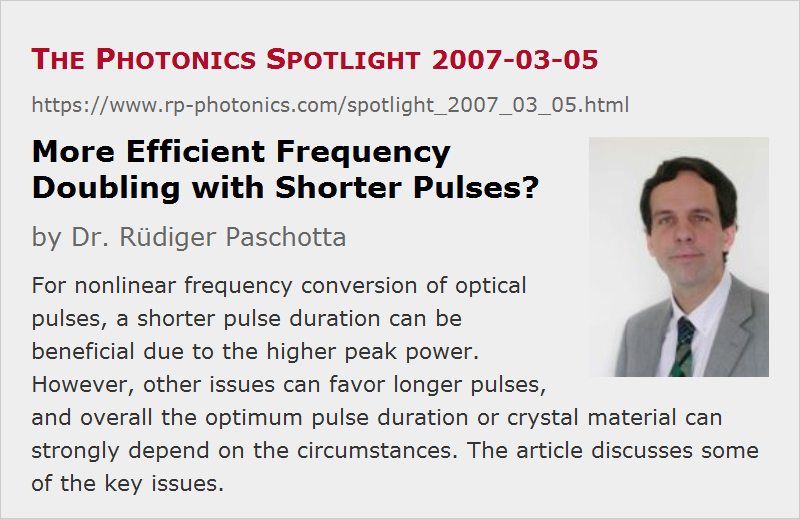

More Efficient Frequency Doubling with Shorter Pulses?
Posted on 2007-03-05 as a part of the Photonics Spotlight (available as e-mail newsletter!)
Permanent link: https://www.rp-photonics.com/spotlight_2007_03_05.html
Author: Dr. Rüdiger Paschotta, RP Photonics Consulting GmbH
Abstract: For nonlinear frequency conversion of optical pulses, a shorter pulse duration can be beneficial due to the higher peak power. However, other issues can favor longer pulses, and overall the optimum pulse duration or crystal material can strongly depend on the circumstances. The article discusses some of the key issues.

Ref.: encyclopedia articles on nonlinear frequency conversion, frequency doubling, RGB sources; F. Brunner et al., Opt. Lett. 29 (16), 1921 (2004); S. Favre et al., IEEE J. Quantum Electron. 39 (6), 733 (2003)
It is often claimed that shorter optical pulses allow to obtain more efficient nonlinear frequency conversion, such as frequency doubling in some nonlinear crystal material. This may or may not be true, depending on the circumstances.
A shorter pulse duration for a given pulse energy means a higher peak power. In situations where one is short of peak power, this may then help. For example, consider frequency doubling in a critically phase-matched crystal. Due to the spatial walk-off, the pump beam radius can not be made very small, and this effect often sets a much tighter limit to focusing than e.g. the beam divergence. As a result, one can achieve sufficiently high optical intensities for efficient nonlinear conversion only for high enough peak power, which is easier to obtain with shorter pulses. As an example, take the reference given above (Brunner 2004): the reported RGB source was based on a passively mode-locked thin disk laser, which generated sub-picosecond pulses, and only with that short pulse duration it was possible to use critical phase matching at room temperature for all nonlinear conversion stages except one. Longer pulses, as could be generated e.g. with some picosecond vanadate laser, would have required noncritical phase matching, so that several temperature-stabilized crystal ovens would have to be used – with obvious implications for any practical use.
Another aspect which in principle favors shorter pulses is that the damage threshold of nonlinear crystals in terms of optical intensity (not fluence) normally gets higher for shorter pulses. However, this aspect can normally become relevant only for very long pulse durations in the microsecond regime (Favre 2003).
For nonlinear conversion at shorter wavelengths, ultrashort (femtosecond) pulses can introduce significant difficulties. The point is that chromatic dispersion and thus the group velocity mismatch becomes strong at short wavelengths. This means that shorter pulses require shorter nonlinear crystals. To maintain a high conversion efficiency, one then has to increase the peak intensity. While high intensities are easy to achieve for short pulses, these intensities are exactly what nonlinear crystals usually don't like at short wavelengths: two-photon absorption and other effects can cause crystal degradation (photodarkening) and even catastrophic damage. Possible remedies are resonant frequency doubling or schemes with multiple nonlinear crystals and compensation of group velocity mismatch with additional birefringent crystals in between. Such approaches, however, make the system overall more complex and expensive. The simple solution is to use larger beam areas, but this reduces the conversion efficiency.
The discussion shows that a comprehensive understanding of a number of issues is essential to design a nonlinear conversion stage with high conversion efficiency and long lifetime. For example, a crystal material with higher damage threshold may not lead to a better combination of efficiency and lifetime, if it has a lower nonlinearity or less suitable dispersive properties. There are different parameter regimes, where different effects are limiting the achievable performance. For the choice of the best suited material, a figure-of-merit has to be used depending on the operation regime.
This article is a posting of the Photonics Spotlight, authored by Dr. Rüdiger Paschotta. You may link to this page and cite it, because its location is permanent. See also the RP Photonics Encyclopedia.
Note that you can also receive the articles in the form of a newsletter or with an RSS feed.
Questions and Comments from Users
Here you can submit questions and comments. As far as they get accepted by the author, they will appear above this paragraph together with the author’s answer. The author will decide on acceptance based on certain criteria. Essentially, the issue must be of sufficiently broad interest.
Please do not enter personal data here; we would otherwise delete it soon. (See also our privacy declaration.) If you wish to receive personal feedback or consultancy from the author, please contact him e.g. via e-mail.
By submitting the information, you give your consent to the potential publication of your inputs on our website according to our rules. (If you later retract your consent, we will delete those inputs.) As your inputs are first reviewed by the author, they may be published with some delay.
|  |
If you like this page, please share the link with your friends and colleagues, e.g. via social media:
These sharing buttons are implemented in a privacy-friendly way!